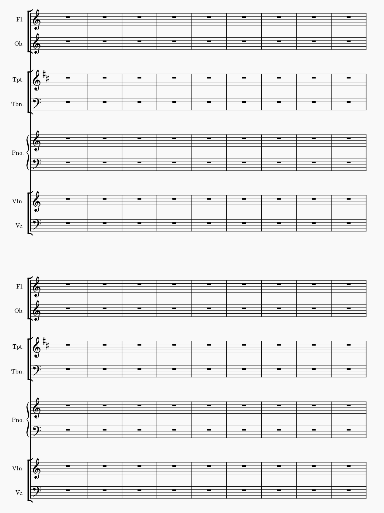
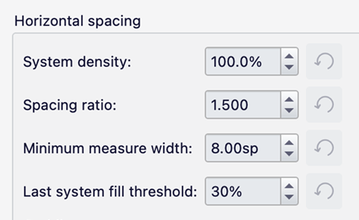
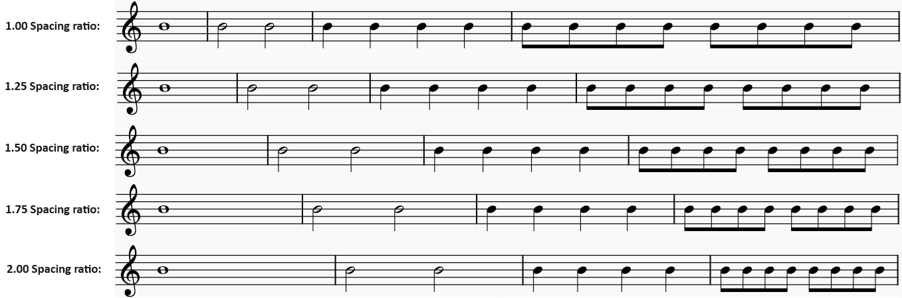
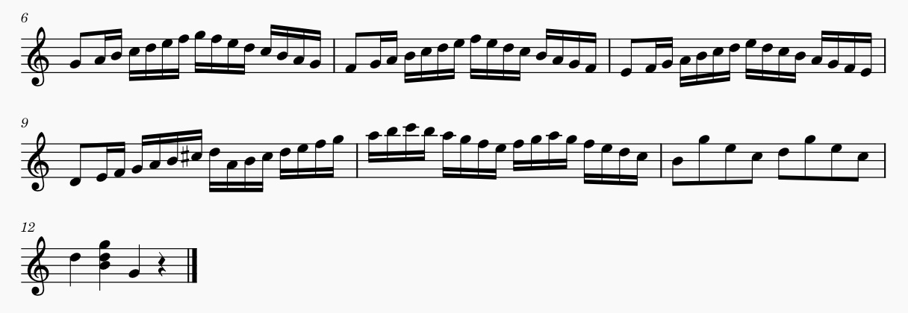

Score size and spacing
This page is describes the high-level settings that can be used to determine the overall layout of your score. For details on making more specific changes to horizontal layout, see Systems and horizontal spacing. For vertical layout, see Pages and vertical spacing.
Page settings
The settings that control the page layout and overall size of the music are found in Format -> Page settings:

Page and margin sizes
- Page size: Select from a range of predefined page sizes.
- Width: Set a custom width.
- Height: Set a custom height.
- Portrait or Landscape: Set the page orientation.
- Two sided: If checked, this allows the the margins (and also the Header and footer) to be set independently for odd and even pages.
- Odd page margins: Set the top, bottom, left, and right page margins for odd-numbered pages.
- Even page margins: Set the top, bottom, left, and right page margins for even-numbered pages. If Two sided is not checked, these options are disabled and the odd page margins will be applied to all pages.
The default page size is Letter in North and Central America, and A4 in most of the rest of the world. The margins default to 15mm regardless of page size.
The default staff space size is 1.75mm, resulting in a 7mm stave. This value may have been automatically reduced when creating a new score, if the number of staves required would not fit on the page.
These defaults may be defined differently in some templates.
Scaling
Staff space (sp) defines the size of a staff space, i.e. the distance between two staff lines. This is perhaps the most important single setting for the layout of your score, since the size of most items in the score will be scaled to match it. (Some types of items – for example, text, frames and images – can be given an absolute size instead. See the relevant pages for those items for details.)
It is possible to set individual staves in the score to be a different size, as a proportion of this basic size (for instance, to create a cue staff). See Staff/Part properties.
See also: Page layout concepts.
Other settings
- First page number: Set the number on which page numbering starts. This can be useful if you have a title page or preface, for example. Negative numbers are allowed, but any numbers below 1 will never be shown in the score.
- Unit: Either Inch or Millimeter, which will be used for all relevant values in this dialog.
To reset all settings in this dialog to their default values, click the Reset all page settings to default button.
If you are making changes to the page settings for a part, and want to apply the settings to all parts of the score, click the Apply to all parts button. See Parts.
Style settings
Vertical and horizontal spacing work in very similar ways:
- In vertical spacing, the minimum height required for each system is calculated, then the number of systems that can fit on each page is worked out, and then the staves on each page are spread out to fill the vertical space.
- In horizontal spacing, the minimum width required for each measure is calculated, then the number of measures that can fit on a system is worked out, and then the contents of those measures are spread out to fill the horizontal space.
This is similar to how the 'fully justified' option in a word processor works. The exact way that these calculations are made, and how the spreading ('justification') is done, can be controlled using the settings in Format -> Style -> Spacing.
Vertical spacing

Music top margin and Music bottom margin specify the minimum distance between the outermost staff lines and the page margins.
Vertical frame top margin and Vertical frame bottom margin specify the default minimum distance between vertical frames and the closest staff line above and below. See Using frames for additional content.
The remaining settings determine how MuseScore Studio distributes staves across the vertical space on the page.
When Enable vertical justification of staves is selected, MuseScore will do its best to space staves across the page, filling all the space. It tries to create even space between staves but can also create proportionally more space between systems and between instrumental sections within systems. The three Factor settings control this behavior. This is best shown by an example:

The factors are multiples of the 'basic' distance between two staves. That distance can be seen here between the flute and oboe, the trumpet and trombone, and the violin and cello.
- Factor for distance between systems has been set to 4.0 here, meaning that the distance between adjacent systems should be 4x the basic distance.
- Factor for distance above/below bracket has been set to 2.0, meaning that the distance above or below a heavy bracket should be 2x the basic distance.
- Factor for distance above/below brace has been left at the default of 1.1. In other circumstances that would result in a very slight amount of extra space either side of the piano, but here it has no effect as it is trumped by the factor for the bracketed groups either side of it.
The remaining options define various minimum and maximum values:
- Min. system distance and Max. staff distance: The minimum distance between two adjacent systems.
- Min. staff distance and Max. staff distance: The minimum and maximum distance between two adjacent staves.
- Max. grand staff distance: The maximum distance between staves connected by a brace. This setting is useful for preventing the staves belonging to a single instrument from being spread too far apart.
- Max page fill distance: The maximum amount of extra space that can be added, once all other criteria are satisfied, to fill out the page. This is mostly intended to prevent partly-filled pages (containing only a few staves) from being excessively spread out. If you always want your staves to be justified, regardless of how few there are on a page, increase this to a large value.
If Disable vertical justification of staves is selected, the staves will start at a fixed distance apart, with that space then being increased as necessary to avoid collisions. If the page has more than one system, space can be added between systems (though not within them) to fill the available space, up to some maximum. This option will result in ragged bottom margins across the score in most cases.
The following options control this behavior:
- Staff distance: The basic distance between two adjacent staves.
- Grand staff distance: The basic distance between staves connected by a brace.
- Min. system distance and Max. system distance: The minimum and maximum distance between two adjacent systems.
Note that the maximum values are never absolute. They will always be exceeded if it is necessary to avoid collisions between items on adjacent staves.
There is one setting relevant to vertical spacing in Format -> Style -> Score -> Autoplace:
- Min. vertical distance: This is the minimum vertical distance to be enforced between items on adjacent staves, unless Autoplace has been turned off for them. You can disable this entirely by setting it to a large negative value (e.g. -999), though you must then deal with the resulting collisions.
Finally, it is possible to create extra distance above a specific staff (throughout the score) by using the Extra distance above staff setting in the Staff/Part properties dialog. See Staff/Part properties.
Horizontal spacing

The first four options control some fundamental aspects of the horizontal spacing algorithm.
System density influences MuseScore's calculation of how many measures it will try to fit on a system. Normally this should be left at its default of 100%, but it can be increased if you want MuseScore to squeeze more measures onto a system by default (which will compromise the proportional spacing between durations), or decreased if you want to see fewer measures on a system by default. Note that this only affects MuseScore's default initial layout: it will have no effect on the spacing within a system that you have locked, for example.
Spacing ratio sets the ratio between the space required for durations in the ratio 1:2. For example, the default of 1.5 means that a half note will take 1.5x as much space than a quarter note. Setting the ratio to 1.0 means that all notes will have equal space, regardless of their duration, and setting it to 2.0 means that notes will be spaced entirely proportionally to their durations (that is, a half note receives twice as much space as a quarter note – effectively, 'space-time notation'):

You might prefer a value like 1.6 to slightly emphasize the differences, or 1.4 to slightly level them out.
Note that these are only the 'ideal' proportions between durations which are used as a starting point for layout calculations. In reality these are always compromised by other items like accidentals and offset notes, and for longer durations end up being moderated to some extent, as not doing so would make it almost impossible to ever fit more than one or two measures onto a system for most music.
Minimum measure width determines the minimum possible width for a measure. This is useful to prevent measures containing just a measure rest (or a single note of that duration) from becoming too narrow.
Last system fill threshold determines whether the last system of a section should be justified (i.e. stretched out to the full horizontal width of the page). If the basic amount of space required by the measures on the system does not exceed the percentage of the total space given then the system will not be justified. For example:

The large section of Padding options that follows specifies the distances between objects of different types. Most of these are absolute settings (for example, Clef to key signature or Time signature to barline), but those beginning 'Note to...' (e.g. Note to note and Note to barline) only represent a minimum padding distance, the actual space usually becoming greater when the system is justified.
Finally, there are some settings for spacing of the System header, which is the space on a system before the first note or rest, usually containing the clef and possibly the key signature and time signature.

- Clef/key signature to first note: The distance between the clef or key signature and the first note or rest.
- Time signature to first note: The distance between the time signature and the first note or rest.
- Start of the system to first note: The distance from the very beginning of the system to the first note. This can be useful in a situation where no clefs or signatures are shown (like in some lead sheets, for example) and you want to create extra space before the first note on the line.